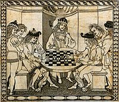
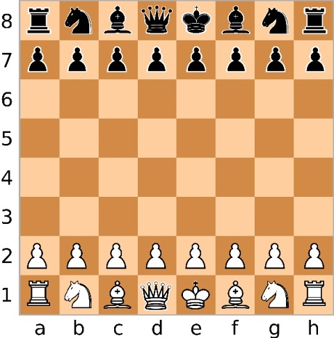
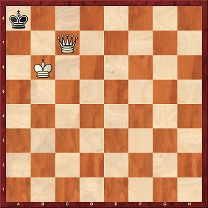
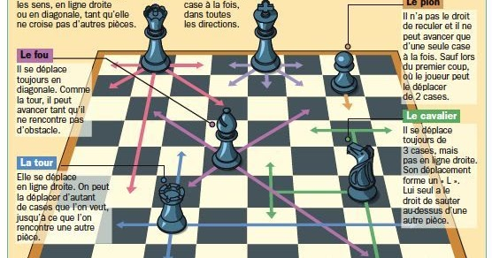

Allez directement à la section souhaitée :

Le jeu d’échecs, ou les échecs, (prononcer [eʃɛk]) est un jeu de société opposant deux joueurs de part et d’autre d’un tablier appelé échiquier composé de soixante-quatre cases, 32 claires et 32 sombres nommées les cases blanches et les cases noires. Les joueurs jouent à tour de rôle en déplaçant l'une de leurs seize pièces (ou deux pièces en cas de roque), claires pour le camp des blancs, sombres pour le camp des noirs. Chaque joueur possède au départ un roi, une dame, deux tours, deux fous, deux cavaliers et huit pions. Le but du jeu est d'infliger à son adversaire un échec et mat, une situation dans laquelle le roi d'un joueur est en prise sans qu'il soit possible d'y remédier.
Le jeu a été introduit dans le Sud de l'Europe à partir du xe siècle par les Arabes, mais on ignore où il fut inventé exactement. Il dérive du shatranj ou chatrang qui lui-même est la version perse du chaturanga de l'Inde classique. Les règles actuelles se fixent à partir de la fin du xve siècle. Le jeu d’échecs est l'un des jeux de réflexion les plus populaires au monde. Il est pratiqué par des millions de gens sous de multiples formes : en famille, entre amis, dans des lieux publics, en club, en tournoi, par correspondance, contre des machines spécialisées, entre ordinateurs, entre programmes, sur Internet, aux niveaux amateur et professionnel.
Depuis son introduction en Europe, le jeu d'échecs jouit d'un prestige et d'une aura particulière qui du « jeu des rois » l’a fait devenir peu à peu « le roi des jeux » ou encore « le noble jeu », en référence à sa dimension tactique et à sa notoriété mondiale. Il a très largement inspiré la culture, en particulier la peinture, la littérature et le cinéma.

Une partie d'échecs commence dans la position initiale ci-contre, les blancs jouent le premier coup puis les joueurs jouent à tour de rôle en déplaçant à chaque fois une de leurs pièces (deux dans le cas d'un roque). Chaque pièce se déplace de façon spécifique, il n'est pas possible de jouer sur une case occupée par une pièce de son propre camp. Lorsqu'une pièce adverse se trouve sur la case d'arrivée de la pièce jouée, elle est capturée et retirée de l'échiquier. Gagner du matériel (des pièces) est un moyen pour gagner la partie, mais ne suffit pas toujours pour y parvenir.
Il existe des règles spéciales liées au déplacement de certaines pièces : le roque, qui permet le déplacement simultané du roi et de l'une des tours ; la prise en passant, qui permet une capture particulière des pions ; et la promotion des pions, qui permet de les transformer en une pièce maîtresse de son choix (sauf le roi) lorsqu'ils atteignent la dernière rangée de l'échiquier.
Lorsqu'un roi est menacé de capture, on dit qu'il est en échec. Si cette menace est imparable (on peut tenter de parer la menace en déplaçant le roi, en interposant une pièce ou en capturant la pièce attaquante) on dit qu'il y a échec et mat et la partie se termine sur la victoire du joueur qui mate. Il est interdit de mettre son propre roi en échec ou de le faire passer sur une ligne d'échec pendant le roque. Il est également interdit de roquer quand le roi est en échec sur sa case de départ. Si cela arrive (par inadvertance entre débutants) on doit reprendre le coup.
Si un camp ne peut plus jouer aucun coup légal (cela arrive par exemple avec un roi seul et l'ensemble de ses pions bloqués) et si son roi n'est pas en échec, on dit alors qu'il s'agit d'une position de pat. Quel que soit le matériel dont le camp adverse dispose, la partie est déclarée nulle, c'est-à-dire sans vainqueur.

Au jeu d'échecs, le pat est une position dans laquelle le camp ayant le trait et n'étant pas sous le coup d'un échec, ne peut plus jouer de coup légal. La partie est alors déclarée nulle quel que soit le matériel restant sur l'échiquier. Le pat met immédiatement fin à la partie1.
Beaucoup de jeux de plateaux connaissent le concept de pat, mais la plupart du temps cela compte comme une défaite pour le camp qui ne peut plus bouger (au xiangqi, aux dames, au mū tōrere ou encore au bagh chal). Il arrive aussi qu'il soit interdit par la règle de priver l'adversaire de coup légal, comme à l'awélé, où l'on doit "donner à manger" à l'adversaire, ou encore au sit-tu-yin2.
Le pat est improbable dans les débuts ou les milieux de partie. En finale, il est parfois recherché par un camp qui est en grande infériorité matérielle ou est causé par une maladresse de débutant dans une finale élémentaire. Il existe d'ailleurs plusieurs techniques pour rechercher le pat, notamment celui de la « pièce enragée » (pièce qui ne peut pas être capturée à cause des menaces de pat qui effectue une répétition de la position).
Le pat est un thème fréquent dans les études d'échecs.

La stratégie concerne l'évaluation globale de la position et l'établissement de plans à long terme, par exemple le positionnement des pièces et leur coordination, ou l'attaque dans un secteur donné de l’échiquier, alors que la tactique concerne la réalisation de manœuvres immédiates qui découlent des éléments stratégiques mis en place. Le grand maitre Xavier Tartakover, a dit un jour à ce sujet, que : « La tactique consiste à savoir ce qu'il faut faire quand il y a quelque chose à faire. La stratégie consiste à savoir ce qu'il faut faire quand il n'y a rien à faire ! »
On distingue généralement trois phases dans le déroulement d'une partie d'échecs : l'ouverture qui dure de 10 à 25 coups et pendant laquelle les joueurs développent leurs pièces en prévision de la bataille à venir ; le milieu de partie qui est en général la période la plus combative avec éventuellement des attaques directes sur les rois ; et enfin la finale, lorsque le matériel est réduit, les rois y prennent une part plus active et la promotion des pions est souvent un objectif décisif. Chacune de ces phases fait intervenir à des degrés divers des éléments tactiques, stratégiques et psychologiques.
Le jeu d’échecs, ou les échecs, (prononcer [eʃɛk]) est un jeu de société opposant deux joueurs de part et d’autre d’un tablier appelé échiquier composé de soixante-quatre cases, 32 claires et 32 sombres nommées les cases blanches et les cases noires. Les joueurs jouent à tour de rôle en déplaçant l'une de leurs seize pièces (ou deux pièces en cas de roque), claires pour le camp des blancs, sombres pour le camp des noirs.
Chaque joueur possède au départ un roi, une dame, deux tours, deux fous, deux cavaliers et huit pions. Le but du jeu est d'infliger à son adversaire un échec et mat, une situation dans laquelle le roi d'un joueur est en prise sans qu'il soit possible d'y remédier.
Le jeu a été introduit dans le Sud de l'Europe à partir du xe siècle par les Arabes, mais on ignore où il fut inventé exactement.
Il dérive du shatranj ou chatrang qui lui-même est la version perse du chaturanga de l'Inde classique. Les règles actuelles se fixent à partir de la fin du xve siècle. Le jeu d’échecs est l'un des jeux de réflexion les plus populaires au monde. Il est pratiqué par des millions de gens sous de multiples formes : en famille, entre amis, dans des lieux publics, en club, en tournoi, par correspondance, contre des machines spécialisées, entre ordinateurs, entre programmes, sur Internet, aux niveaux amateur et professionnel.
Depuis son introduction en Europe, le jeu d'échecs jouit d'un prestige et d'une aura particulière qui du « jeu des rois » l’a fait devenir peu à peu « le roi des jeux » ou encore « le noble jeu », en référence à sa dimension tactique et à sa notoriété mondiale. Il a très largement inspiré la culture, en particulier la peinture, la littérature et le cinéma.